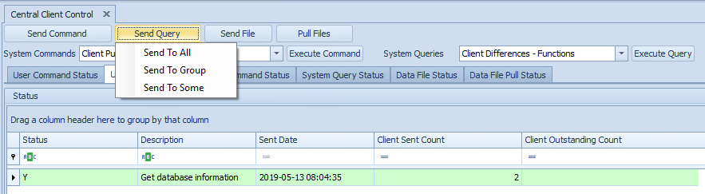
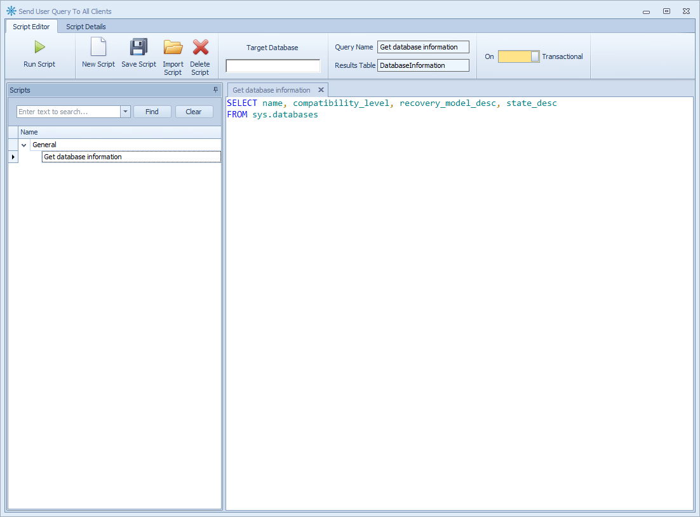
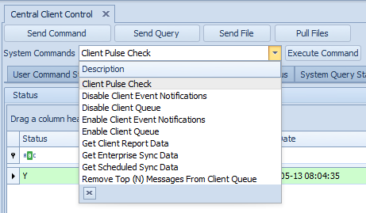
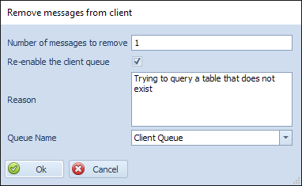

Central Client Control Overview
The Conductor4SQL Central Client Control tab on the Central Console provides you with a number of options to manage and control any of your installed Client Servers.
Here are some examples of what you might want to do here:
- You want to run a query to check the status of all your client side databases. - See Send User Query section
- You want to alter a table at all your in-country stores. - See Send User Command section
- You want to ensure that all your table meta-data and stored procedures are identical across your entire environment. - See Send System Query section
- You want to enable DDL Event Auditing at all your in-country stores as a core stored procedure keeps changing and you want to find the culprit. - See Send System Command section
- You have Word document you want to send to all your clients stores updating all the store operators on the latest corporate policy. - See Send File section.
- You have a day end Excel extract at 1000+ stores that you would like to pull to the Central server rather connecting to each server individually. - See File Pull section
- You sent out a User Query to all of in country stores and you want to see everywhere where that query failed. - See Central Client Control History
Tip
Ensure that the list of status results on display are updated by clicking the Refresh button.
Send user Commands and Queries
- User Commands are used for DDL (data definition language) which is used for manipulating data structures within the databases at the clients.
- User Queries are used for querying information from the clients.
Send User Command
To send a User Command click on the Send Command button and choose which clients you would like to send the command to from the context menu (All, Group or Some)
Enter your script in the Script Editor form

Tip
Please view our Script Editor Guide for more information on the Script Editor
Warning
If your query has multiple result sets only the first result set is returned from each client
Click of the Submit button to send the command.
The Monitor Request screen will give you a status update on the sent message.
Tip
You can close this window at any time by clicking on the close button and your message will still be sent to the client and processed in the background.
The Status and colors work the same way as The Status Grid below.
Send User Query
To send a User Query click on the Send Query button and choose which clients you would like to send the command to from the context menu (All, Group or Some)

Enter your script in the Script Editor form

Tip
Please view our Script Editor Guide for more information on the Script Editor
Click of the Submit button to send the command.
The Monitor Request screen will give you a status update on the sent message.
Tip
You can close this window at any time by clicking on the close button and your message will still be sent to the client and processed in the background.
The Status and colors work the same way as The Status Grid above.
User Query Results
The User Query Results view is simply all the results from each client's query combined into a single view.
To get the Query Results you need to either: Click on the View All button or right click on the selected clients in the Details Grid and select the View Results option
Note
Query results are only available on the User Query Status and System Query Status tabs.
The Client Name and Business Attribute columns are prefixed onto the existing result columns.
Tip
You can filter and group the results however you wish. For more information on the grid control capabilities view the Grid Control Guide.
If you right click on the grid you will get a context menu:
- Add To Group - Add the selected client to a Client Group
- Open Client - Open the Client Console for the selected client
You also have two export options: Export to File - will export the results to a Xlsx, Pdf or Html file Export to Table - export the results to a physical sql table (useful for advanced queries).
Send system Commands and Queries
- System Commands - are pre-configured commands for controlling and checking Conductor4SQL clients. E.g. Client Pulse Check and Remove top (N) messages from Client Queue
- System Queries - pre-defined queries mostly used for metadata compare. E.g. Client Differences - Procedures
Send System Command
To send a System Command select the command from the System Commands drop down list,

Click on the Execute Command button and choose which clients you would like to send the command to from the context menu (All, Group or Some).
The available system commands are:
- Client Pulse Check - Pulse checks are used to check if a client is alive and accessible
- Remove Top (N) Messages From Client Queue - Remove error messages from the queue
- Enable Client Queue - Enable the selected queue at the client
- Disable Client Queue - Disable the selected queue at the client
- Get Client Report Data - Get report data for all of the activated reports
- Get Enterprise Sync Data - Get Enterprise Sync data sync data
- Enable Client Event Notifications - Enable client event auditing for the selected clients
- Disable Client Event Notifications - Disable client event auditing for the selected clients
Client Pulse Check
This command's prime objective is to check if a client is active and return a status condition. This condition will display the operational status of the Client on the Dashboard.
Remove Top (n) messages from Client Queue
This command is used to clean up a Client Queue if there are problematic messages that still exist. You may choose the number of messages you want to remove from the top end of the list.

This command requests that you enter some relevant information about the removal such as the: Number of message to remove - Number of messages to remove from the queue Re-enable the client queue - Toggle to enable or disable re-enabling the queue after removing the messages * Reason - The reason for removing the messages
Tip
Use a descriptive reason when removing messages
- Queue Name - the queue to remove the messages from
Enable Client Queue
This command enables any Client which may be in a disabled condition. Clients are normally disabled when a bad SQL command is submitted.
Disable Client Queue
This command disables the Client queue which is useful if you want to send messages to a client but you do not want the client to process the messages at this point in time.
Enable Client Event Notification
This command enables client DDL auditing events, then there will be a trace on any event happening at the client. - See Auditing page for more information
Disable Client Event Notification
This command's prime objective is to disable the client DDL events, meaning once disabled then there will not be any client events recorded for that client the command is send to.
Get Enterprise Sync Data
This command retrieves any outstanding Enterprise sync data from the client to the central.
Get Client Report Data
If reports are enabled then this command will then fetch report data to the central in order to update the client reporting.
Send System Query
To send a System Query select the query from the System Queries drop down list,
Click on the Execute Command button and choose which clients you would like to send the command to from the context menu (All, Group or Some).
The following system queries are available: Client differences - Tables Client differences - Views Client differences - Constraints Client differences - Procedures * Client differences - Functions
System Query Results
The System Query Results view is used for viewing differences between a local database on central's SQL Server Objects and the clients' SQL Server Objects.
Note
The Supported SQL Server objects are Tables, Views, Constraints, Stored Procedures and Functions
Only items that are different are listed. Items that match are not included.
To get the Query Results you need to either: Click on the View All button or right click on the selected clients in the Details Grid and select the View Results option
Note
Query results are only available on the User Query Status and System Query Status tabs.
The System Query Results Grid has the following columns:
- Client Name - the name of the client that is getting compared (for filtering results)
- Business Attributes - All business attributes are included in the results for filtering purposes
- Central Object Name - the name of the object at central that is getting compared
- Client Object Name - the name of the object at client that is getting compared
- Status - The type of difference e.g. Missing, Different Definition, Missing Database/Schema
- Hash Bytes - A hash of the text object used for determining if one or more clients are different in the same way or not
- View Difference - View the differences between the object at central and the object at the client
- Fix Differences - Creates a script for altering the object at the client to match what is at central.
Note
This feature is only available when comparing Stored Procedures, Functions or Views.
If you right click on the grid you will get a context menu:
- Add To Group - Add the selected client to a Client Group
- Open Client - Open the Client Console for the selected client
You also have three buttons at the bottom left of the window:
- Export to File - will export the results to a Xlsx, Pdf or Html file
- Export to Table - export the results to a physical SQL table (useful for advanced queries).
- Fix All - find all differences between client and central and create a script for making a script to fix these differences.
Note
This feature is only available when comparing Stored Procedures, Functions or Views.
File Management
Conductor4SQL has the ability to Send Files from central and to Pull Files from the client servers onto the central server.
Send File
To send a File click on the Send File button and choose which clients you would like to send the command to from the context menu (All, Group or Some)
Select the file(s) that you would like to send to the client followed by the Open button
Note
You can only send files that are on the central server.
You then need to fill in some information of where you would like the files to go on the client side: * Enter the path to send files to on client - Fill in the path where you would like the files to be saved to on the client
Note
The client SQL Server needs to have read and write access to the path you specify
- Enter File Description - Use a descriptive name
Click the Send File button to send the files.
Pull File
To Pull Files from your clients select the Pull Files button and choose which clients you would like to send the command to from the context menu (All, Group or Some)
You will be presented with the Pull Files form:
- Source - The source folder of the files at the clients
- Pattern - Pull files that match a specific file Pattern (e.g.: *.xlsx will pull all excel files)
- Destination - The path at central where you want to save the files
- Description - Use a descriptive description for filtering results
As soon as you click on OK button the Monitor Request screen for Pull File will show
Central Client Control History
Every User Command & Query, System Command & Query or Data File Push & Pull is logged in Conductor4SQL and placed in easily filterable grids
- 1. History Type Tabs - Select the tab for the history type you would like to see.
- 2. Status Grid - This displays a summary for each message that you sent to the clients.
- 3. Details Grid - This displays detail for the selected message .
History Type Tabs
The available history tabs are:
- User Command Status
- User Query Status
- System Command Status
- System Query Status
- Data File Status
- Data File Pull Status
The Status Grid
Each line item on the Status Grid represents a summary for each message that you sent to the clients for the selected history tab.
The Status Grid has the following columns:
* Status - The overall status of the sent message.
Note
The statuses and colors are defined as follows:
- Y (Green) - message executed successfully at all clients
- X (Red) - message failed at one or more clients
- N (Yellow) - message has one or more clients that have not processed the message
- F (Blue) - messages have been processed at clients are one or more are marked as fixed (previous errors are marked as fixed)
- Description - the description for the message
- Sent Date - the date and time in which the message was sent to the clients
- Client Sent Count - The total number of clients the message was sent to
- Client Outstanding Count - The total number of clients in pending or error state for the message
- Latency - the amount of time in minutes that it took to get a response from all the clients
- SQL Text - the actual sql statement sent to the clients
- Username - the name of the user that sent the message to the clients
- Use Database - The database name in which the message was executed against (only )
Note
The Use Database column is only available for the User Command Status and User Query Status tabs
If you right click on any row in the grid you will get a context menu with the following options:
- View SQL - open a new tab with the full SQL script that was sent.
Note
The View SQL option is only available for the User Command Status and User Query Status tabs
- Resend User Query/Command - Open a new window with the script editor ready to resend the selected user command/query.
Note
The Resend User Query/Command option is only available for the User Command Status and User Query Status tabs
- Reset Filters - clear all the grid filters for this grid.
The Details Grid
To view the Details Grid left click on any row in the Status Grid.
Every line on the Details Grid shows the message sent to every client for the currently selected item in the Status Grid
The Details Grid has the following columns: * Status - The status of the sent message for the individual client.
Tip
The Status and colors work the same way as The Status Grid above.
- Client - the name of the client in which the message was sent to.
- Sent Date - the date and time in which the message was sent to the client
- Processed Date - the date and time in which the message was processed at the client
- User Fixed - the date, user and comment for when the message was marked as fixed (only applicable for messages that are of Status F)
- Error Message - the last error that occurred when executing the message at the client
- SQL Result Size KB - The size of the resulting returned message
Note
The SQL Result Size KB column is only applicable for User Queries and System Queries
If you right click on any row in the grid you will get a context menu with the following options:
- Send a System Command - send a system command to the selected clients. See the Send System Command section for more information
- Export To File - Export the results in the grid to Xlsx, Pdf or Html
- Add To Group - Add the selected clients to a Client Group
- Remove From Group - Removed the selected clients from a Client Group
- Open Client - Open the Client Console for the selected client
Note
This option is only available when a single client is selected
- View Results - View the query results for the selected clients
Tip
You can use the View All button to view all results for all clients
Note
The View Results option is only available for the User Query Status and System Query Status tabs
- Reset Filters - clear all the grid filters for this grid.
- Mark As User Fixed - used for marking System Commands and System Queries that are in Error state to Fixed state or alternatively changing the user fixed message
- Change User Fixed Detail - used for changing the user fixed message for a User Commands or User Queries